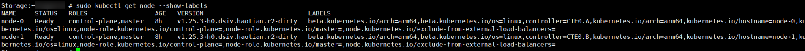

If you need to configure a node selector during subsequent Kubernetes cluster registration, perform the operations in this section to obtain node labels by running a command.
- Log in to the Kubernetes cluster in the background.
- Run the kubectl get node --show-labels command. You can view the node labels in the LABELS column.


If OpenShift is used, run the oc get node --show-labels command to view the node label.